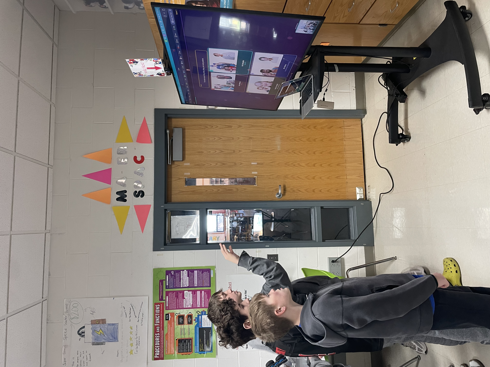

Student-Facing Project
Guess That Teacher
An interactive game designed to strengthen teacher-student trust and give students a playful window into who their teachers are outside the classroom.
Why This Project
Middle school runs on relationships. The students who feel most connected to their teachers are the ones who show up, take risks, and ask for help when they need it, but those connections are hard to manufacture and easy to miss in a 500-student school. I built Guess That Teacher to give that relationship-building a shape: a low-stakes, high-fun community game that lets students learn things about teachers they'd never hear in class.
Teachers submit clues about themselves, baby photos, favorite foods, childhood pets, hidden talents, and students try to match the clues to the faces. It runs on big screens in the lobby during spirit weeks, in homerooms as a warm-up, and on student devices as a pick-up game. The goal isn't to make a perfect game; it's to create a small daily reason for teachers and students to laugh at the same thing.
How It Works
The game loads a pool of teacher profiles, each with a clue, a set of possible identities, and a correct answer. Students see a clue, pick the teacher they think matches, and get instant feedback with a short "behind the answer" blurb from the teacher themselves. Teachers can update their own profiles through a lightweight admin interface, so content refreshes across the school year without me having to be the bottleneck.
The architecture is deliberately simple: a static front-end, a small JSON data layer, and a GitHub-hosted deploy so other teachers can fork the repo and run their own version at their schools without any infrastructure to set up.
In the Classroom
The first time I ran it was with a small group of Computer Club students helping me test version 1.0 in the Makerspace. Watching them immediately start guessing, laughing, and arguing about which teacher had the yellow parakeet as a kid was the moment I knew the project had legs. We've since rolled it out school-wide during spirit weeks and used it as the warm-up for Care Week assemblies.

What's Next
I'm working on a v2 that adds team-based play, per-grade leaderboards, and a "teacher-of-the-week" rotation so the spotlight moves predictably through the staff. The bigger goal is to package the whole thing as a drop-in tool any school could deploy in an afternoon, Guess That Teacher as part of a small suite of community-building apps.